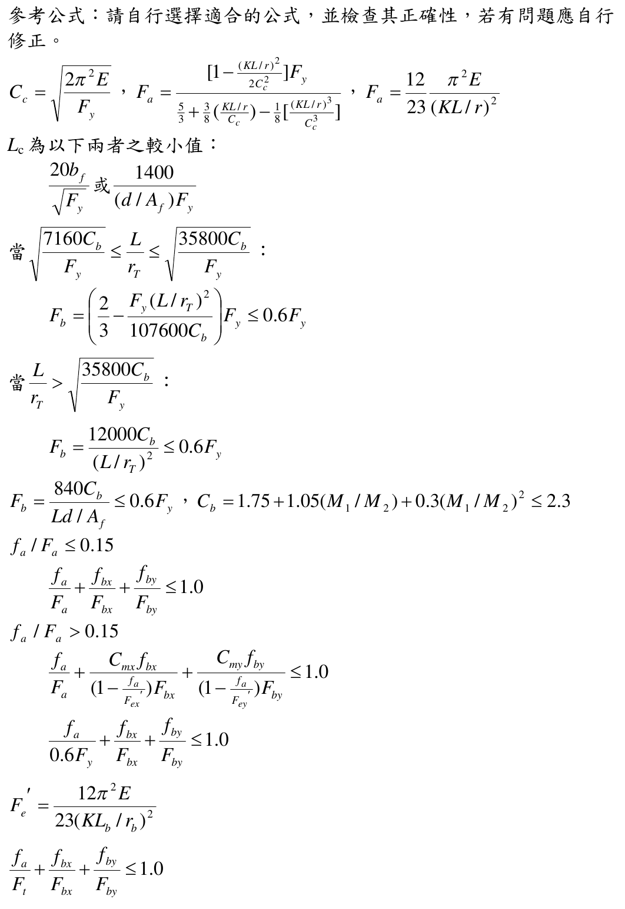
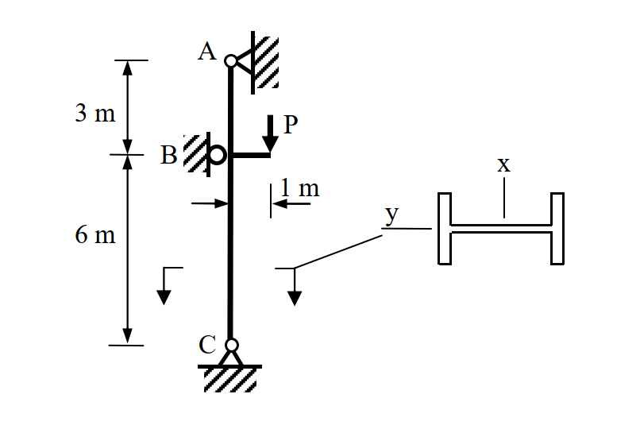
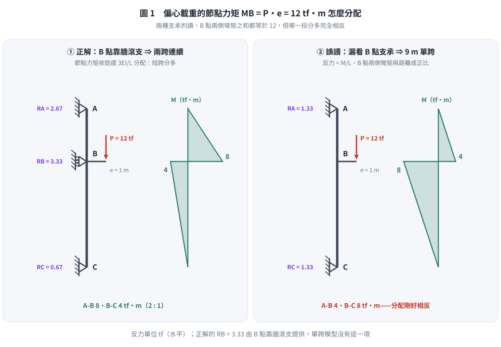
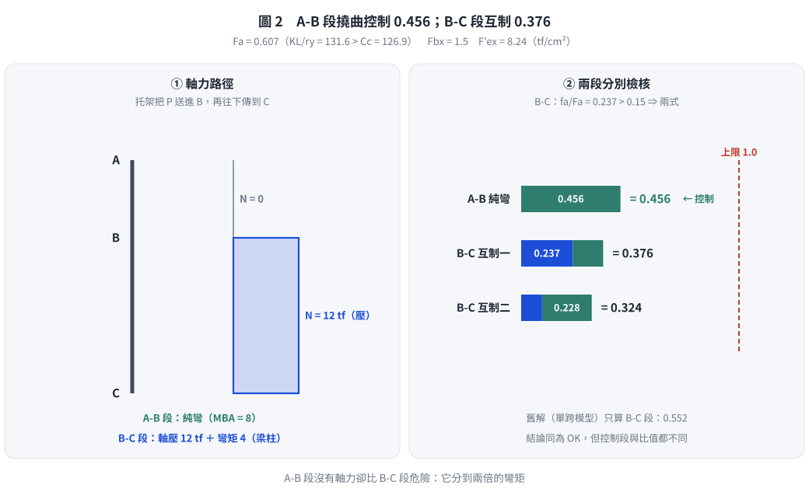

📄 題目正本：考卷原文・附圖・判讀清單（待確認）
SS-2019-3 題目正本
本檔只記錄考卷上寫了什麼、圖上畫了什麼，不含任何解法。解析見同資料夾
SS-2019-3.md。
判讀清單經使用者確認前，狀態為「待確認」；確認後本檔原則上不再修改（改動須回考卷原圖並記 log）。
| 項目 | 內容 |
|---|---|
| 考卷 | raw/exams/SS-2019_鋼結構設計.pdf 第 1 頁（頁次 3－1），第三題；參考公式在第 2 頁（頁次 3－2） |
| 考年 | 民國 108 年（2019） |
| 配分 | 30 分 |
| 附圖 | 1 張（柱立面＋斷面），SS-2019-3-fig-1.png；第 2 頁參考公式截圖 SS-2019-3-eqn-1.png |
| 判讀狀態 | 待確認（轉錄 2026-11-02，PyMuPDF 110 dpi 全頁＋附圖 500 dpi 局部目視（向量圖）＋PDF 文字座標核對，盲讀後才比對既有解析） |
1. 考卷原文（逐字）
三、下圖所示為一 H 型鋼柱 H400 × 200 × 8 × 13，於 B 點承受偏心工作載重 $P$ = 12 tf。鋼柱於 A、B 與 C 點皆有側向支撐。鋼柱為結實斷面，鋼材降伏應力 $F_y$ = 2.5 tf/cm²，極限強度 $F_u$ = 4.1 tf/cm²，彈性模數 $E$ = 2040 tf/cm²。不考慮鋼柱自重，試依據容許應力設計法，檢核鋼柱是否滿足設計需求（無需檢核剪力）。（30 分）
H400 × 200 × 8 × 13：A= 83.4 cm，$I_x$ = 23,500 cm⁴，$I_y$= 1,740 cm⁴，$r_x$= 16.8 cm，$r_y$= 4.56 cm，$r_T$= 5.23 cm，$S_x$= 1,170 cm³，$S_y$= 174 cm³。
（「A= 83.4 cm」照考卷原文，單位應為 cm²。）
2. 考卷給的公式、附表與參數
- 題文：$P$ = 12 tf（工作載重）；$F_y$、$F_u$、$E$；斷面性質（照錄於 §1）。
- 第 2 頁「參考公式：請自行選擇適合的公式，並檢查其正確性，若有問題應自行修正。」照錄：
$$C_c = \sqrt{\frac{2\pi^2E}{F_y}},\quad F_a = \frac{\left[1 - \frac{(KL/r)^2}{2C_c^2}\right]F_y}{\frac53 + \frac38\left(\frac{KL/r}{C_c}\right) - \frac18\left[\frac{(KL/r)^3}{C_c^3}\right]},\quad F_a = \frac{12}{23}\frac{\pi^2E}{(KL/r)^2}$$
$$L_c\ \text{為以下兩者之較小值：}\ \frac{20b_f}{\sqrt{F_y}}\ \text{或}\ \frac{1400}{(d/A_f)F_y}$$
$$\text{當}\ \sqrt{\frac{7160C_b}{F_y}} \le \frac{L}{r_T} \le \sqrt{\frac{35800C_b}{F_y}}:\ F_b = \left(\frac23 - \frac{F_y(L/r_T)^2}{107600C_b}\right)F_y \le 0.6F_y$$
$$\text{當}\ \frac{L}{r_T} > \sqrt{\frac{35800C_b}{F_y}}:\ F_b = \frac{12000C_b}{(L/r_T)^2} \le 0.6F_y$$
$$F_b = \frac{840C_b}{Ld/A_f} \le 0.6F_y,\quad C_b = 1.75 + 1.05(M_1/M_2) + 0.3(M_1/M_2)^2 \le 2.3$$
$$f_a/F_a \le 0.15:\ \frac{f_a}{F_a} + \frac{f_{bx}}{F_{bx}} + \frac{f_{by}}{F_{by}} \le 1.0$$
$$f_a/F_a > 0.15:\ \frac{f_a}{F_a} + \frac{C_{mx}f_{bx}}{\left(1 - \frac{f_a}{F'_{ex}}\right)F_{bx}} + \frac{C_{my}f_{by}}{\left(1 - \frac{f_a}{F'_{ey}}\right)F_{by}} \le 1.0,\qquad \frac{f_a}{0.6F_y} + \frac{f_{bx}}{F_{bx}} + \frac{f_{by}}{F_{by}} \le 1.0$$
$$F'_e = \frac{12\pi^2E}{23(KL_b/r_b)^2},\qquad \frac{f_a}{F_t} + \frac{f_{bx}}{F_{bx}} + \frac{f_{by}}{F_{by}} \le 1.0$$

- 參考公式沒有給 $C_m$ 式，沒有給結實斷面的 $F_b = 0.66F_y$（列出的 $F_b$ 式都以 $0.6F_y$ 為上限）。
- 沒有給 $K$、$b_f$、$t_f$、$d$、$A_f$ 的數值（可由斷面標稱尺寸取得）。
- 卷首注意事項：㈠可以使用電子計算器；㈡不必抄題；㈢本科目除專門名詞或數理公式外，應使用本國文字作答。
3. 附圖

圖面文字照錄：A；3 m；B；P；1 m；6 m；C；x；y。
4. 判讀清單
「把握」標不確定者請優先確認；解讀類項目（題目用字的意思）另標「解讀」。
| # | 項目 | 判讀 | 圖上／題文依據 | 把握 |
|---|---|---|---|---|
| 1 | 偏心 | P 經托架作用，偏心 1 m（自柱軸線量） | 1 m 尺寸線兩端對齊柱軸線與 P 作用線（500 dpi） | 確定 |
| 2 | 彎曲軸 | 偏心在立面平面內；剖面中腹板平行該平面 → 繞強軸 x 彎曲 | 剖面圖 x 軸垂直腹板 | 確定 |
| 3 | B 點支承 | B 點滾支承抵牆 → 在彎曲平面內有側向束制，柱為 A–B–C 兩跨連續構材 | 圖上 B 為抵牆滾支承 | 確定 |
| 4 | A、C 支承 | A 為鉸接於牆、C 為鉸支於地面 | 支承符號 | 確定 |
| 5 | 軸力路徑 | P 由托架傳入後向下經 BC 段到 C；A 端是否也分擔垂直力（AB 段受拉或不受力）圖上未明示 | A 為鉸接（可承兩向力），題未說明 | 不確定（解讀，影響答案，請確認） |
| 6 | 側向支撐 | 題文「A、B 與 C 點皆有側向支撐」→ 弱軸 $K_yL$ 與 LTB $L_b$：AB 段 3 m、BC 段 6 m | 題文 | 確定（解讀） |
| 7 | 載重性質 | 工作載重，ASD 不乘載重係數 | 題文 | 確定 |
| 8 | 斷面積單位 | 「A= 83.4 cm」為筆誤，應為 cm² | 題文 | 確定 |
轉錄：2026-11-02（SS-U1-3 題目正本推廣・批 2）
SS-2019-3 解析
考題編號：SS-2019-3
主分類： SS-U1-3 梁柱桿件
副分類： SS-U1-1（壓力桿件）
設計法： ASD
標籤： 梁柱桿件 偏心載重 ASD 互制公式 Cm F'e LTB Cb 有效長度 弱軸挫屈 彈性挫屈
1. 原始題目重述 (Problem Restatement)
題目： 下圖所示為一 H 型鋼柱 H400×200×8×13，於 B 點承受偏心工作載重 $P = 12$ tf。鋼柱於 A、B 與 C 點皆有側向支撐。鋼柱為結實斷面，鋼材降伏應力 $F_y = 2.5$ tf/cm²，極限強度 $F_u = 4.1$ tf/cm²，彈性模數 $E = 2040$ tf/cm²。不考慮鋼柱自重，試依容許應力設計法，檢核鋼柱是否滿足設計需求（無需檢核剪力）。（30 分）
已知斷面性質（H400×200×8×13）：
| 性質 | 數值 |
|---|---|
| $A$ | 83.4 cm² |
| $I_x$ | 23,500 cm⁴（強軸） |
| $I_y$ | 1,740 cm⁴（弱軸） |
| $r_x$ | 16.8 cm |
| $r_y$ | 4.56 cm |
| $r_T$ | 5.23 cm |
| $S_x$ | 1,170 cm³ |
| $S_y$ | 174 cm³ |
幾何配置：
- A（頂部，鉸支）→ B（中間側向支撐，偏心載重施加點；圖示為靠牆滾支，提供水平反力）：3 m
- B → C（底部，鉸支）：6 m
- 偏心距：$e = 1$ m（強軸 x 方向）
圖說：柱長 A-C = 9m（A-B = 3m，B-C = 6m）。P = 12 tf 施加於 B 點，偏心距 1m 朝強軸方向，故彎矩作用於強軸（x 軸，$S_x = 1170$ cm³）。A、B、C 三點均有側向支撐；B 點畫有靠牆滾支，柱在強軸平面內為 A–B–C 兩跨連續（A、C 鉸、B 水平束制）。軸力由 B 點傳至底部 C，A-B 段無軸壓；B 點外加彎矩依兩跨勁度分配，A-B 段彎矩較大、B-C 段承受軸壓且較長，兩段都要檢核。
考卷給定參考公式（ASD 梁柱）：
$$C_c = \sqrt{\frac{2\pi^2 E}{F_y}}, \quad F_a = \frac{\left[1 - \frac{(KL/r)^2}{2C_c^2}\right]F_y}{\frac{5}{3} + \frac{3}{8}\frac{KL/r}{C_c} - \frac{1}{8}\left(\frac{KL/r}{C_c}\right)^3}, \quad F_a = \frac{12\pi^2 E}{23(KL/r)^2}$$
$$L_c = \min\!\left(\frac{20b_f}{\sqrt{F_y}},\; \frac{1400}{(d/A_f)F_y}\right)$$
當 $\sqrt{7160C_b/F_y} \le L/r_T \le \sqrt{35800C_b/F_y}$：
$$F_b = \left(\frac{2}{3} - \frac{F_y(L/r_T)^2}{107600C_b}\right)F_y \le 0.6F_y$$
$$F_b = \frac{840C_b}{Ld/A_f} \le 0.6F_y, \quad C_b = 1.75 + 1.05(M_1/M_2) + 0.3(M_1/M_2)^2 \le 2.3$$
當 $f_a/F_a \le 0.15$：$\dfrac{f_a}{F_a} + \dfrac{f_{bx}}{F_{bx}} + \dfrac{f_{by}}{F_{by}} \le 1.0$
當 $f_a/F_a > 0.15$：
$$\frac{f_a}{F_a} + \frac{C_{mx}f_{bx}}{\left(1-\frac{f_a}{F_{ex}'}\right)F_{bx}} + \frac{C_{my}f_{by}}{\left(1-\frac{f_a}{F_{ey}'}\right)F_{by}} \le 1.0$$
$$\frac{f_a}{0.6F_y} + \frac{f_{bx}}{F_{bx}} + \frac{f_{by}}{F_{by}} \le 1.0$$
$$F_e' = \frac{12\pi^2 E}{23(KL_b/r_b)^2}$$
2. 考題核心精神與出題者意圖 (Core Concepts & Examiner's Intent)
核心觀念： 偏心載重在柱上同時產生軸壓力與彎矩，需以梁柱互制公式（beam-column interaction）綜合檢核。關鍵步驟是：正確分配彎矩圖、判斷控制段、計算 $F_a$（壓力容許應力）與 $F_b$（彎曲容許應力），再代入互制方程式。
出題者意圖：
1. 考核偏心載重引起的彎矩分布（矩靜力分析）
2. 考核壓力桿件容許應力 $F_a$（細長比計算、$C_c$ 判斷彈/非彈性）
3. 考核 LTB 容許彎曲應力 $F_b$（$C_b$、$L/r_T$ 計算）
4. 考核梁柱互制公式（$C_m$、$F_e'$ 的應用）
3. 解題戰略地圖與陷阱分析 (Strategic Roadmap & Trap Analysis)
作戰計畫（7 步驟）：
1. 靜力分析→彎矩圖
2. 計算 $f_a$
3. 計算各段 $KL/r$，判斷 $F_a$
4. 計算 $f_{bx}$（控制段最大彎矩）
5. 計算 $C_b$，判斷 LTB 範圍，求 $F_{bx}$
6. 判斷 $f_a/F_a$ 大小，選取互制公式
7. 代入互制公式，判定 OK/NG
關鍵陷阱：
| 陷阱 | 說明 | 應對 |
|---|---|---|
| ❌ 彎矩分布算錯 | B 點為靠牆滾支（水平束制），柱為兩跨連續；若漏看 B 支承、當成 A–C 簡支，會得到 A-B 4、B-C 8 tf·m（剛好相反） | B 點外加彎矩依兩跨勁度 $3EI/L$ 分配：A-B 2/3、B-C 1/3 |
| ❌ 軸力路徑與控制段 | 軸力 $P$ 自 B 點向下傳至 C，A-B 段無軸壓；A-B 段彎矩 8 tf·m（純彎）、B-C 段 4 tf·m＋軸壓 | 兩段分別檢核，不可把 B-C 段軸力疊到 A-B 段彎矩 |
| ❌ 誤用 $KL/ry = 65.8$（A-B段）計算 $F_a$ | 弱軸最大細長比在B-C段 $KL/r_y = 131.6$ | 取最大細長比控制 |
| ❌ $F_b$ 只用 $840C_b/(Ld/A_f)$ | 需同時計算 $L/r_T$ 對應的公式，取兩者較大值 | 兩式都算，取 max（但不超過 $0.6F_y$） |
| ❌ $C_m$ 算錯 | B-C 段端點彎矩：B=4 tf·m，C=0 tf·m | $M_1/M_2 = 0$，$C_m = 0.6$ |
3.5 變數層次分析（Variable Hierarchy Analysis）
複習提示：解題後，在每個卡住的知識點「卡關?」欄標記
⚠；第二次複習時只看有⚠的項目。
最終目標： 靜力分析求彎矩圖 → 計算 $f_a$、$F_a$（壓力容許）、$F_{bx}$（LTB 容許彎曲）→ 代入梁柱互制公式確認 DCR ≤ 1.0
主要公式（$\boxed{\phantom{x}}$ = 未知，待推導）
Step 1：靜力分析（等效集中矩）
$$\boxed{M_B} = P \times e = 12 \times 1 = 12 \text{ tf}\cdot\text{m}$$
Step 2：軸壓應力與壓力容許應力
$$\boxed{f_a} = P / A, \quad C_c = \sqrt{2\pi^2 E / F_y}, \quad \boxed{F_a} = \frac{12\pi^2 E}{23(KL/r)^2}$$
Step 3：LTB 容許彎曲應力
$$\boxed{F_{bx}} = \max\!\left[\left(\frac{2}{3}-\frac{F_y(L/r_T)^2}{107600C_b}\right)F_y,\; \frac{840C_b}{Ld/A_f}\right] \leq 0.6F_y$$
Step 4：梁柱互制公式（$f_a/F_a > 0.15$，取控制值）
$$\text{互制一：}\frac{f_a}{F_a} + \frac{C_{mx}\,f_{bx}}{\left(1-f_a/\boxed{F'_{ex}}\right)F_{bx}} \leq 1.0$$
$$\text{互制二：}\frac{f_a}{0.6F_y} + \frac{f_{bx}}{F_{bx}} \leq 1.0$$
L1：題目直接給定
| 符號 | 數值 | 說明 |
|---|---|---|
| $P$ | 12 tf | 偏心工作載重 |
| $e$ | 1 m | 偏心距（強軸方向） |
| $F_y$ | 2.5 tf/cm² | 降伏應力 |
| $E$ | 2040 tf/cm² | 彈性模數 |
| $A$ | 83.4 cm² | 斷面積（H400×200×8×13） |
| $r_x$ | 16.8 cm | 強軸迴轉半徑 |
| $r_y$ | 4.56 cm | 弱軸迴轉半徑 |
| $r_T$ | 5.23 cm | 受壓翼板迴轉半徑 |
| $S_x$ | 1,170 cm³ | 強軸彈性斷面模數 |
| $A\text{-B}$ | 3 m | 上段長度 |
| $B\text{-C}$ | 6 m | 下段長度（控制段） |
L2：需知識點推導
Step 1：靜力分析（彎矩圖）
| 符號 | 公式 / 來源 | 卡關? |
|---|---|---|
| $M_B$ | $P \times e = 12$ tf·m（B 點等效集中矩） | |
| 分配係數 | $k = 3EI/L$（遠端鉸）：$k_{AB} : k_{BC} = \tfrac{1}{3} : \tfrac{1}{6} = 2 : 1$ | ⚠ |
| $M_{B\text{上}}$ | $\tfrac{2}{3} \times 12 = 8$ tf·m（A-B 段最大彎矩，無軸壓） | |
| $M_{B\text{下}}$ | $\tfrac{1}{3} \times 12 = 4$ tf·m（B-C 段最大彎矩，軸壓 12 tf） |
Step 2：軸壓應力與 $F_a$（B-C 段控制）
| 符號 | 公式 / 來源 | 卡關? |
|---|---|---|
| $f_a$ | $P/A = 12/83.4 = 0.1439$ tf/cm² | |
| $C_c$ | $\sqrt{2\pi^2 E / F_y} = 126.9$ | |
| $KL/r_y$ | $1.0 \times 600/4.56 = 131.6 > C_c$ → 彈性挫屈 | |
| $F_a$ | $12\pi^2 E / [23(KL/r)^2] = 0.6067$ tf/cm² | |
| $f_a/F_a$ | $0.237 > 0.15$ → 須用完整互制公式 |
Step 3：彎曲應力與 $F_{bx}$
| 符號 | 公式 / 來源 | 卡關? |
|---|---|---|
| $f_{bx}$ | B-C 段：$400/1170 = 0.342$ tf/cm²；A-B 段：$800/1170 = 0.684$ tf/cm² | |
| $C_b$ | $1.75 + 1.05(M_1/M_2) = 1.75$（$M_1=0$，單曲率） | |
| $L/r_T$ | $600/5.23 = 114.7$，落在非彈性 LTB 區間 | |
| $F_{b1}$ | $(2/3 - F_y(L/r_T)^2/[107600 C_b]) F_y = 1.230$ tf/cm² | |
| $F_{b2}$ | $840 C_b / (L \cdot d/A_f) = 1.593 → 取上限 0.6F_y = 1.5$ tf/cm² | |
| $F_{bx}$ | $\max(1.230, 1.5) = 1.5$ tf/cm² |
Step 4：梁柱互制
| 符號 | 公式 / 來源 | 卡關? |
|---|---|---|
| $C_{mx}$ | $0.6 - 0.4(M_1/M_2) = 0.6$（單曲率，$M_1=0$） | |
| $F'_{ex}$ | $12\pi^2 E / [23(KL_b/r_x)^2] = 8.24$ tf/cm²（強軸） | |
| 互制一（B-C） | $0.237 + 0.139 = 0.376 \leq 1.0$ ✓ | |
| 互制二（B-C） | $0.096 + 0.228 = 0.324 \leq 1.0$ ✓ | |
| A-B 純彎 | $f_{bx}/F_{bx} = 0.684/1.5 = 0.456 \leq 1.0$ ✓（控制） |
L3：深層知識（不懂就卡住）
| 知識點 | 說明 | 卡關? |
|---|---|---|
| ASD 梁柱互制公式選擇 | $f_a/F_a$ 是否 $> 0.15$ 決定用哪個公式；兩個互制方程式皆須驗算 | |
| $C_c$ 判斷彈/非彈性挫屈 | $KL/r > C_c$ → 彈性（Euler），反之 → 非彈性 | |
| LTB 兩公式取大值 | $F_{b1}$（$L/r_T$ 線性折減）和 $F_{b2}$（$Ld/A_f$）兩式都算，取大值，且不超過 $0.6F_y$ | |
| $C_b$ 單曲率計算 | $M_1/M_2 = 0$ 時 $C_b = 1.75$；B-C 段端部彎矩 4→0、A-B 段 8→0，皆 $M_1 = 0$ | |
| 偏心載重彎矩分布 | B 點有水平束制 → 兩跨連續梁受節點力矩，依勁度分配（遠端鉸 $k = 3EI/L$）；軸力路徑由載重點往下 | |
| $F'_e$ 強/弱軸分別計算 | 互制公式中 $F'_{ex}$ 用強軸 $r_x$ 計算（彎矩作用於強軸），不可與弱軸 $r_y$ 混用 |
4. 步驟化詳細計算過程 (Step-by-Step Detailed Calculation)
Step 1：靜力分析與彎矩圖
偏心載重 $P = 12$ tf 經 1 m 托架作用在 B 點，等效於：
- 軸壓力 $P = 12$ tf：由 B 點向下傳至底部支承 C（B-C 段受壓、A-B 段無軸力；A 點視為只提供水平束制的側向支承）
- 集中彎矩 $M_B = P \times e = 12 \times 1 = 12$ tf·m（施加於 B 點，強軸）
支承判讀： A 鉸、C 鉸，B 點畫有靠牆滾支（水平束制）。強軸平面內柱為 A–B–C 兩跨連續梁，B 點承受節點力矩 $M_B$。
彎矩分配（兩跨遠端皆鉸，$k = 3EI/L$）：
$$k_{AB} : k_{BC} = \frac{3EI}{300} : \frac{3EI}{600} = 2 : 1$$
$$M_{BA} = \frac{2}{3} \times 12 = 8 \text{ tf}\cdot\text{m}, \qquad M_{BC} = \frac{1}{3} \times 12 = 4 \text{ tf}\cdot\text{m}$$
水平反力： $R_A = 8/3 = 2.67$ tf、$R_C = 4/6 = 0.67$ tf、$R_B = 3.33$ tf（$\Sigma H = 0$ ✓）；轉角相容檢核：$\theta_B = M_{BA}L_{AB}/3EI = 8 \times 3/3EI = 4 \times 6/3EI$ ✓
彎矩圖：
| 位置 | 彎矩 |
|---|---|
| A | 0 |
| B（上，A-B 段端） | 8 tf·m |
| B（下，B-C 段端） | 4 tf·m |
| C | 0 |
- 段 A-B（3 m）：彎矩 0 → 8 tf·m，無軸壓，純彎檢核
- 段 B-C（6 m）：彎矩 4 → 0 tf·m，軸壓 12 tf，梁柱互制檢核
原解漏看 B 點水平支承、把 A–C 當成單跨簡支，得 A-B 4、B-C 8 tf·m（分配剛好相反），並把軸力算到整根柱。

圖 1 節點力矩 $M_B = P \cdot e = 12$ tf·m 的兩種分配。正解（兩跨連續）短跨 A-B 分到 8、B-C 分到 4；漏看 B 點支承的單跨模型恰好相反——這張圖攔的就是本題 2026-11-01 勘誤的那個錯。
Step 2：計算軸壓應力 $f_a$
$$f_a = \frac{P}{A} = \frac{12}{83.4} = \mathbf{0.1439 \text{ tf/cm}^2}$$
Step 3：計算壓力容許應力 $F_a$（B-C 段）
計算 $C_c$：
$$C_c = \sqrt{\frac{2\pi^2 E}{F_y}} = \sqrt{\frac{2 \times 9.8696 \times 2040}{2.5}} = \sqrt{16{,}110} = \mathbf{126.9}$$
B-C 段各方向細長比：
弱軸（控制）：
$$\frac{KL}{r_y} = \frac{1.0 \times 600}{4.56} = \mathbf{131.6} \quad (\text{K=1.0，兩端鉸支})$$
強軸：
$$\frac{KL}{r_x} = \frac{1.0 \times 600}{16.8} = 35.7$$
控制：弱軸 $KL/r_y = 131.6 > C_c = 126.9$ → 彈性挫屈
$$F_a = \frac{12\pi^2 E}{23(KL/r)^2} = \frac{12 \times 9.8696 \times 2040}{23 \times 131.6^2} = \frac{241{,}650}{398{,}327}$$
$$\boxed{F_a = 0.6067 \text{ tf/cm}^2}$$
$$\frac{f_a}{F_a} = \frac{0.1439}{0.6067} = \mathbf{0.237 > 0.15} \quad \Rightarrow \text{須使用完整互制公式}$$
Step 4：計算彎曲應力 $f_{bx}$
$$f_{bx}^{BC} = \frac{400}{1170} = \mathbf{0.342 \text{ tf/cm}^2}, \qquad f_{bx}^{AB} = \frac{800}{1170} = \mathbf{0.684 \text{ tf/cm}^2}$$
（兩段最大彎矩皆發生於 B 點，作用於強軸）
Step 5：計算容許彎曲應力 $F_{bx}$（B-C 段）
H400×200×8×13 斷面參數（$t_f = 13$ mm = 1.3 cm）：
$$d = 40 \text{ cm},\quad A_f = b_f \times t_f = 20 \times 1.3 = 26 \text{ cm}^2$$
$$\frac{d}{A_f} = \frac{40}{26} = 1.538 \text{ cm}^{-1}$$
$C_b$ 計算（B-C 段，端部彎矩 $M_2 = 4$ tf·m，$M_1 = 0$ tf·m）：
$$C_b = 1.75 + 1.05 \times \frac{M_1}{M_2} + 0.3\left(\frac{M_1}{M_2}\right)^2 = 1.75 + 0 + 0 = \mathbf{1.75}$$
判斷 $L/r_T$ 範圍（$L$ = 600 cm）：
$$\sqrt{\frac{7160 C_b}{F_y}} = \sqrt{\frac{7160 \times 1.75}{2.5}} = \sqrt{5012} = 70.8$$
$$\sqrt{\frac{35800 C_b}{F_y}} = \sqrt{\frac{35800 \times 1.75}{2.5}} = \sqrt{25060} = 158.3$$
$$\frac{L}{r_T} = \frac{600}{5.23} = 114.7$$
→ $70.8 \le 114.7 \le 158.3$ → 非彈性 LTB 區間
LTB 公式 1（$L/r_T$ 線性折減）：
$$F_{b1} = \left(\frac{2}{3} - \frac{F_y(L/r_T)^2}{107600\,C_b}\right)F_y = \left(\frac{2}{3} - \frac{2.5 \times 114.7^2}{107600 \times 1.75}\right) \times 2.5$$
$$= \left(0.6667 - \frac{32{,}890}{188{,}300}\right) \times 2.5 = (0.6667 - 0.1747) \times 2.5 = 1.230 \text{ tf/cm}^2$$
LTB 公式 2（$Ld/A_f$）：
$$F_{b2} = \frac{840\,C_b}{L \cdot d/A_f} = \frac{840 \times 1.75}{600 \times 1.538} = \frac{1470}{922.8} = 1.593 \text{ tf/cm}^2 > 0.6F_y = 1.5$$
$$\Rightarrow F_{b2} = 1.5 \text{ tf/cm}^2$$（上限 $0.6F_y$）
取較大值：
$$F_{bx} = \max(F_{b1},\,F_{b2}) = \max(1.230,\, 1.5) = \boxed{1.5 \text{ tf/cm}^2}$$
Step 6：計算 $C_{mx}$ 與 $F'_{ex}$
$C_{mx}$（B-C 段，$M_1/M_2 = 0$，單曲率）：
$$C_{mx} = 0.6 - 0.4 \times \frac{M_1}{M_2} = 0.6 - 0 = \mathbf{0.6}$$
$F'_{ex}$（強軸，B-C 段）：
$$\frac{KL_b}{r_b} = \frac{1.0 \times 600}{r_x} = \frac{600}{16.8} = 35.71$$
$$F'_{ex} = \frac{12\pi^2 E}{23(KL_b/r_b)^2} = \frac{12 \times 9.8696 \times 2040}{23 \times 35.71^2} = \frac{241{,}650}{29{,}329} = \mathbf{8.24 \text{ tf/cm}^2}$$
Step 7：B-C 段代入互制公式
互制公式一（$f_a/F_a = 0.237 > 0.15$）：
$$\frac{f_a}{F_a} + \frac{C_{mx}\,f_{bx}}{\left(1-\dfrac{f_a}{F'_{ex}}\right)F_{bx}} = 0.237 + \frac{0.6 \times 0.342}{\left(1 - \dfrac{0.1439}{8.24}\right) \times 1.5} = 0.237 + \frac{0.205}{1.474} = 0.237 + 0.139 = \mathbf{0.376} \le 1.0 \quad \checkmark$$
互制公式二：
$$\frac{f_a}{0.6F_y} + \frac{f_{bx}}{F_{bx}} = \frac{0.1439}{1.5} + \frac{0.342}{1.5} = 0.096 + 0.228 = \mathbf{0.324} \le 1.0 \quad \checkmark$$
Step 8：A-B 段（純彎）
A-B 段無軸壓，只檢核撓曲。$L_b = 300$ cm $> L_c = \min(20b_f/\sqrt{F_y},\ 1400/[(d/A_f)F_y]) = \min(253,\ 364) = 253$ cm，不得用 $0.66F_y$；$C_b = 1.75$（$M_1 = 0$），$L/r_T = 300/5.23 = 57.4 < \sqrt{7160C_b/F_y} = 70.8$ → $F_{bx} = 0.6F_y = 1.5$ tf/cm²
$$\frac{f_{bx}}{F_{bx}} = \frac{0.684}{1.5} = \mathbf{0.456} \le 1.0 \quad \checkmark \quad (\text{控制})$$
結論
$$\boxed{\text{鋼柱 H400×200×8×13 滿足 ASD 設計需求（A-B 段撓曲控制，比值 0.456；B-C 段互制 0.376）} \quad \checkmark}$$
替代解讀（A 點也承受垂直反力）： 兩端鉸支皆可承受軸力時，軸力依軸向勁度 $EA/L$ 分配：A-B 段受拉 $12 \times 6/9 = 8$ tf、B-C 段受壓 $4$ tf。B-C：$f_a/F_a = 0.079 < 0.15$ → $0.079 + 0.228 = 0.307$；A-B（拉＋彎）：$0.096/1.5 + 0.456 = 0.520$。結論仍 OK。

圖 2 軸力路徑與兩段檢核。A-B 段沒有軸力，卻分到兩倍彎矩，純彎 0.456 反而控制；這張圖攔的是把軸力算到整根柱，以及只驗 B-C 段。
5. 關鍵爭議點與進階探討 (Critical Issues & Advanced Discussion)
偏心載重的彎矩分布（最容易出錯處）
偏心載重 $P = 12$ tf、$e = 1$ m，等效節點力矩 $M_B = 12$ tf·m 施加於 B。關鍵是先看 B 點支承：圖上 B 點畫有靠牆滾支，柱在強軸平面內是兩跨連續梁，節點力矩依各跨勁度分配（遠端鉸 $k = 3EI/L$）：短跨 A-B 勁度大，分到 2/3（8 tf·m），長跨 B-C 分到 1/3（4 tf·m）。
若漏看 B 點支承、當成 A–C 單跨簡支，反力 $R_A = R_C = 12/9$ tf，B 點兩側彎矩變成 4（上）／8（下）——分配剛好相反，控制段也跟著選錯。本題此誤讀在數值上偏保守（舊解比值 0.552），結論雖同為 OK，但力學模型不正確。
記憶口訣： 「有支承的節點力矩，短跨分多」；沒有中間支承時才是「近端小、遠端大」。
弱軸細長比跨越 $C_c$ 的處理
$KL/r_y = 131.6$ 略大於 $C_c = 126.9$，代表鋼柱「恰好」在彈性挫屈範圍。若計算 $C_c$ 稍有誤差，可能算成非彈性（對答案影響不大，但務必寫清楚判斷過程）。
軸力路徑
軸力由托架傳入 B 點後向下傳至底部支承 C，A-B 段沒有軸壓（主解採 A 點只提供水平束制）。原解把軸壓 12 tf 算到整根柱，並以 B-C 段的軸力與 A–C 簡支模型的 8 tf·m 組合；在正確模型下，A-B 段是 8 tf·m 純彎（0.456 控制）、B-C 段是 4 tf·m＋軸壓（0.376）。若 A 點也承受垂直反力，見 Step 8 替代解讀，結論不變。
6. 依最新規範（AISC 360-16／-22）對照
| 項目 | 考卷（ASD 1989 系） | AISC 360-16／-22（ASD，$\Omega$） |
|---|---|---|
| 柱強度 | $KL/r > C_c$：$F_a = 12\pi^2E/[23(KL/r)^2]$ | $F_e = \pi^2E/(KL/r)^2$，$F_y/F_e > 2.25$ 時 $F_{cr} = 0.877F_e$，$P_c = F_{cr}A_g/1.67$ |
| 撓曲 | $F_b$ 由 $L/r_T$、$Ld/A_f$ 兩式取大，$\le 0.6F_y$ | $M_n$ 依 $L_p$、$L_r$ 三區段（需 $J$、$C_w$），$M_c = M_n/1.67$ |
| 二階效應 | $C_m/(1 - f_a/F'_e)$ | $B_1 = C_m/(1 - 1.6P_r/P_{e1})$（ASD 取 $\alpha = 1.6$） |
| 互制 | 兩式（$f_a/F_a > 0.15$） | H1-1a／b |
本題以 360-16 估算 B-C 段軸力： $KL/r_y = 131.6$ → $F_e = 1.163$ tf/cm²，$F_y/F_e = 2.15 < 2.25$ → $F_{cr} = 0.658^{2.15} \times 2.5 = 1.017$ tf/cm²，$P_c = 1.017 \times 83.4/1.67 = 50.8$ tf，$P_r/P_c = 0.236$（與考卷 $f_a/F_a = 0.237$ 幾乎相同）。撓曲強度需 $J$、$C_w$（題目未給），A-B 段 $L_b = 300$ cm 僅略大於 $L_p = 1.76r_y\sqrt{E/F_y} = 229$ cm，$M_n$ 接近 $M_p$，比值將低於考卷版 0.456，結論不變。
修正日期：2026-11-01（依考卷原圖：B 點為靠牆滾支（水平束制），柱為 A–B–C 兩跨連續；原解漏看 B 點支承當成 A–C 簡支，彎矩分配相反（A-B 4／B-C 8 tf·m）且把軸力算到整根柱。更正為依勁度分配 A-B 8、B-C 4 tf·m，軸力只在 B-C 段：B-C 互制 0.376、A-B 純彎 0.456（控制），結論 OK 不變（原解 0.552）；補替代解讀（A 點承受垂直反力）、§6 對照，並修正檔內 \times／\text 被轉成 Tab 字元的亂碼）
圖解補繪：2026-11-03（向量圖 2 張，腳本 gen_SS-2019-3.py，改輸入可原地重跑；SVG 供 wiki／PDF，2× PNG 供 pptx／影片）
驗證狀態：unverified